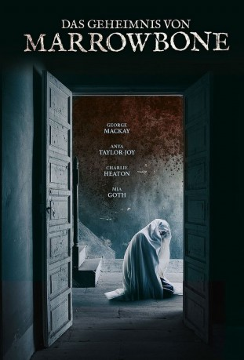

#9741 Das Geheimnis von Marrowbone
Alternativ: The Secret of Marrowbone (Englischer Titel)
 
 IMDB-Wertung: 6.6 / 10
IMDB-Wertung: 6.6 / 10  Metascore: 63
Metascore: 63 
Um ihrem gewalttätigen Ehemann zu entkommen, flieht Rose mit ihren vier Kindern von England nach Amerika und lässt sich dort auf dem abgelegenen Anwesen Marrowbone nieder. Doch das neu gewonnene Familienglück währt nicht lange, da Rose plötzlich erkrankt und wenige Tage später stirbt. Um dem Waisenhaus und einer Trennung zu entgehen, versuchen die vier Geschwister, den Tod der Mutter bis zum 21. Geburtstag des ältesten Sohnes, Jack, zu verheimlichen. Als sich Jack in ein Mädchen aus der Umgebung, verliebt und zudem der neugierige Anwalt Porter in Marrowbone auftaucht, wird es immer schwieriger, ihr Geheimnis zu bewahren.Jedoch ist das nicht das einzige Problem der Geschwister. Denn offenbar geht es in ihrem Haus nicht mit rechten Dingen zu. Schon bald macht sich eine unheimliche Präsenz bemerkbar und die Dämonen der Vergangenheit scheinen sie einzuholen!
Jahr: 2017
Dauer: 110 Minuten
FSK: 16
Land: Spanien Studio: Batrax EntertainmentTonspuren: DTS - ,
Untertitel: Deutsch, Englisch,
Auflösung: 1080p (1920x800) Größe: 4218 MB
Genre: Thriller, Horror, Drama
Regisseur: Sergio G. Sánchez
Drehbuch: Sergio G. Sánchez
Soundtrack: Fernando Velázquez
Darsteller:
 George MacKay als Jack
George MacKay als Jack Anya Taylor-Joy als Allie
Anya Taylor-Joy als Allie- Charlie Heaton als Billy
 Mia Goth als Jane
Mia Goth als Jane- Matthew Stagg als Sam
- Nicola Harrison als Mother
 Kyle Soller als Porter
Kyle Soller als Porter Paul Jesson als Doctor
Paul Jesson als Doctor- Robert Nairne als Monster
 Tom Fisher als Father
Tom Fisher als Father- Myra Kathryn Pearse als Molly
- Laura Brook als Thelma (uncredited)
- Adam Quintero als Mr. Gouldman (uncredited)
Datei: X:\2017(G-M)\Geheimnis von Marrowbone, Das (2017, FSK16, 1920x800).mkv seit 26.10.2018
Festplatte: HD 2017(A-Z)-2018(A-F)
 Es gibt insgesamt 148 Filme in der Gruppe '2017(G-M)'
Es gibt insgesamt 148 Filme in der Gruppe '2017(G-M)'